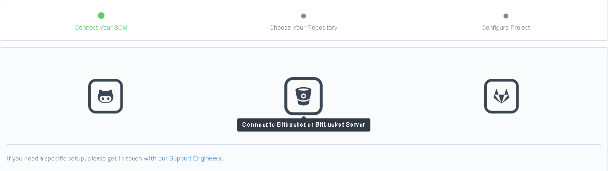
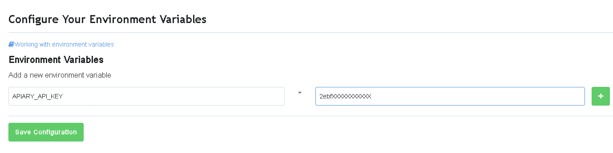
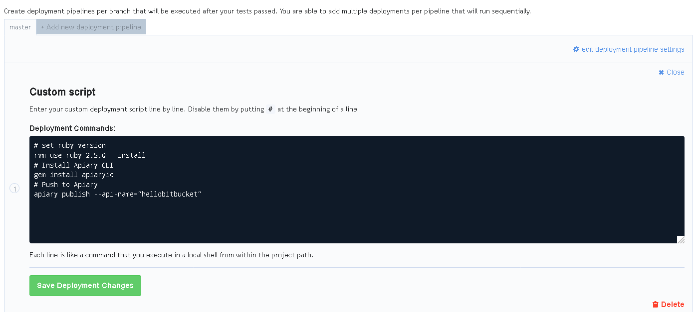
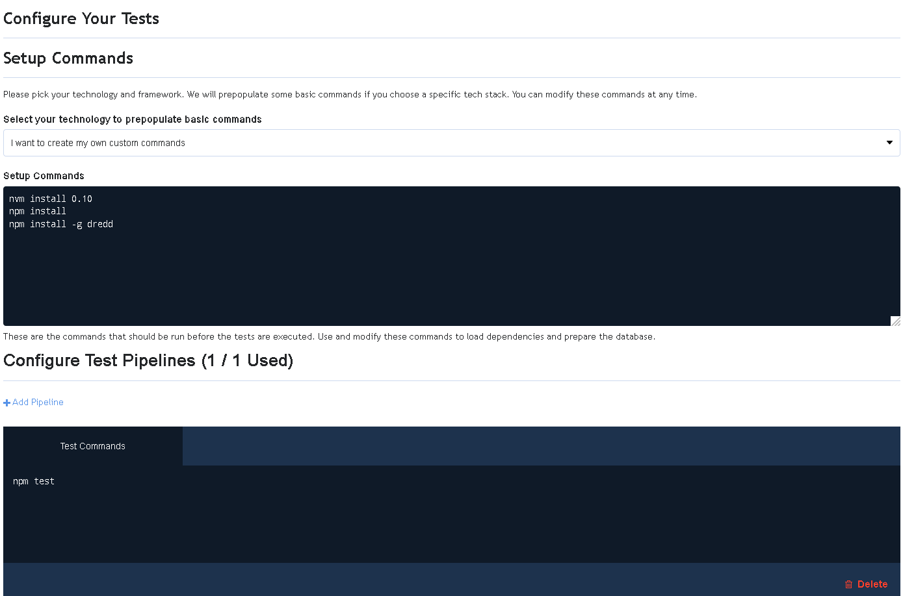
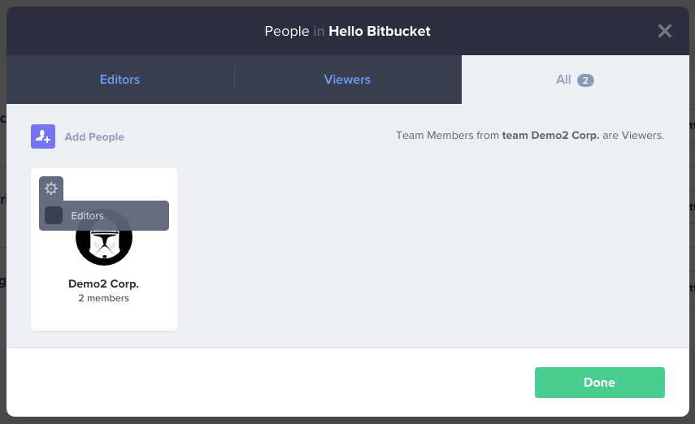
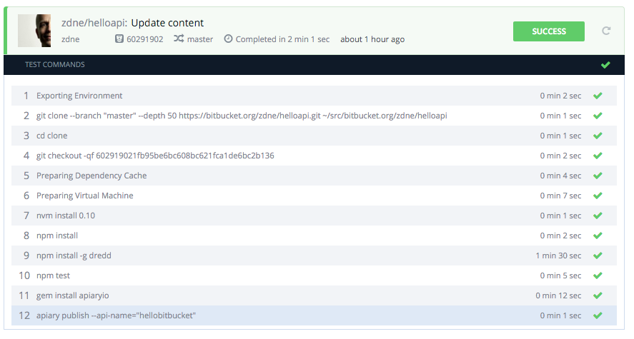
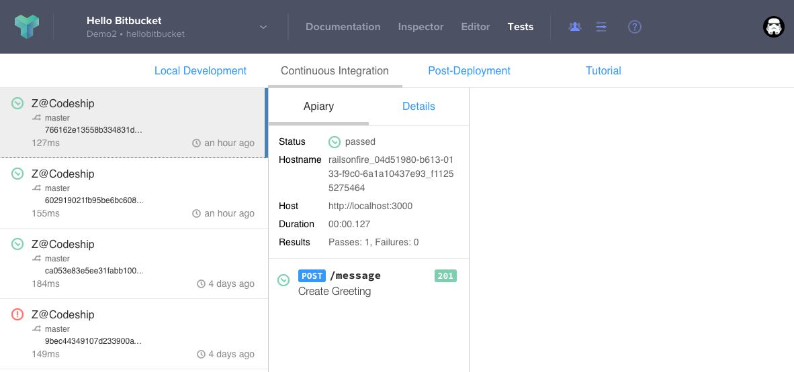
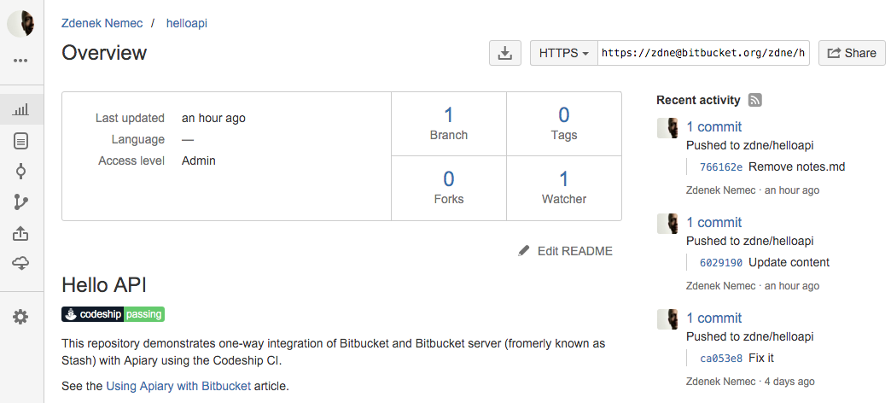

Using Apiary with Bitbucket
This article describes how to setup one way integration of Bitbucket, Bitbucket server (Stash) or any other version control system (VCS) with Apiary.
One way integration
A one way VCS integration is a connection of a VCS service with Apiary through a third party continuous integration provider (CI) where the API description (API Blueprint or Swagger)) can be changed only from the VCS (outside of Apiary).
A push of a new version of API description into the VCS will trigger the CI deployment of the new version into Apiary. With this setup you won’t be able to modify your API description inside Apiary as no changes are propagated from Apiary back to the VCS.
Optionally, you may also include the API tests in this integration.
This article is using Bitbucket as the VCS and Codeship CI as examples, but it should be possible to create a similar setup using any other VCS and CI providers.
1. Create an API Project at Apiary
Create a new API Project in Apiary if you haven’t done it already. Pay attention to its API name as it will be needed later.
2. Create a Bitbucket repository
Create or select a repository on Bitbucket that should host the API description. Make sure you have permissions to add web hooks to this repository.
3. Generate Apiary Token
Generate your personal Apiary token.
This token will be needed to setup the CI later. Any pushes to the VCS will be propagated to Apiary using this token and therefore your credentials.
4. Create Codeship Project
In Codeship, create a new project and select the repository from the step 2.

5. Setup Codeship Environment
In your Codeship project go to the project settings > environment
variables. Add the APIARY_API_KEY variable. Its value is your Apiary token
generated in the step 3.

6. Setup Deploy
In your Codeship project, create a new deployment pipeline. Select the branch
master as the trigger. Choose the “custom script” as deployment method.
The custom script should look like this. Replace APIARY_API_NAME with the
API name from the step 1.
# set ruby version
rvm use ruby-2.5.0 --install
# Install Apiary CLI
gem install apiaryio
# Push to Apiary
apiary publish --api-name="APIARY_API_NAME"

As of now you should be able to push an API description to the repository and after the automatic deploy the changes will get reflected in Apiary.
7. Setup Tests
Optionally, you might want to test your API before it is deployed. We suggest keeping your API description is in the same repository as the API implementation. If this is not the case please disregard this step.
In Codeship project settings go to the tests settings, and select “Node.js” as the base technology for testing commands.
Fill in following as the setup commands.
nvm install 0.10
npm install
npm install -g dredd
Add following as test commands.
npm test

See the Local API testing with Dredd and Continuous API testing for more details.
7. Lock editing in Apiary
Finally, you might want to lock editing of the API description in Apiary to prevent any changes that would be discarded.
At Apiary in your API people settings uncheck the “Editors” checkbox.

8. Push to Bitbucket
Everything is set. Time to push a change to your Bitbucket repository.
If everything is set correctly, your Codeship project task should look like this:

If your API tests passes, the Apiary documentation will get updated automatically.
You can also find the CI test report in Apiary:

And since your API is tested, you can add the badge to the Bitbucket project README.

Conclusion
If you have followed all the steps in this article, your changes in API description on bitbucket will get test and in the case of success they will be pushed to Apiary.
This means your API documentation is always living up to what has been merged in to the master branch of your API implementation!
You can find the example API used in this article on Bitbucket and its documentation at Apiary.